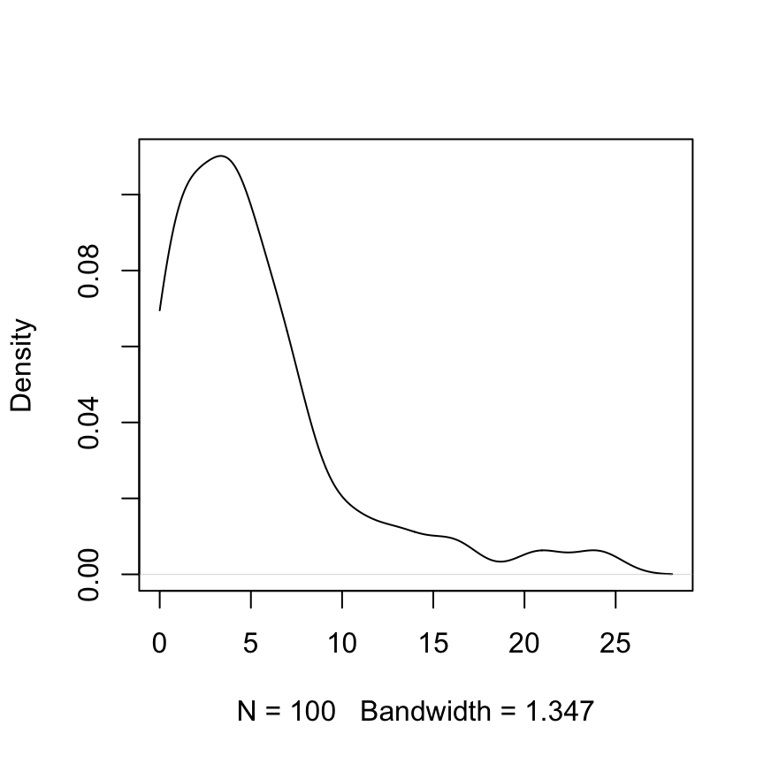

2 Answers to Selected Chapter 2 Exercises
Generalizing from models
library(DAAG)Exercise 2
The table UCBAdmissions was discussed in Subsection 2.2.1. The following gives a table that adds the 2 \(\times\) 2 tables of admission data over all departments:
## UCBAdmissions is in the datasets package
## For each combination of margins 1 and 2, calculate the sum
UCBtotal <- apply(UCBAdmissions, c(1,2), sum)What are the names of the two dimensions of this table?
- From the table
UCBAdmissions, create mosaic plots for each faculty separately. (If necessary refer to the code given in the help page forUCBAdmissions.)
- Compare the information in the table
UCBtotalwith the result from applying the functionmantelhaen.test()to the tableUCBAdmissions. Compare the two sets of results, and comment on the difference.
- The Mantel–Haenzel test is valid only if the male to female odds ratio for admission is similar across departments. The following code calculates the relevant odds ratios:
apply(UCBAdmissions, 3, function(x)
(x[1,1]*x[2,2])/(x[1,2]*x[2,1]))Is the odds ratio consistent across departments? Which department(s) stand(s) out as different? What is the nature of the difference? \end{enumerate} [For further information on the Mantel-Haenszel test, see the help page for mantelhaen.test.]
Use dimnames(UCBAdmissions)[1:2] to get the names of the first two dimensions, which are Admit and Gender.
- First note the code needed to give a mosaic plot for the totals; the question does not ask for this. There is an excess of males and a deficit of females in the
Admittedcategory.
par(mar=c(3.1,3.1,2.6,1.1))
UCBtotal <- apply(UCBAdmissions, c(1,2), sum)
mosaicplot(UCBtotal,col=TRUE)Now obtain the mosaic plots for each department separately.
oldpar <- par(mfrow=c(2,3), mar=c(3.1,3.1,2.6,1), cex.main=0.8)
for(i in 1:6)
mosaicplot(UCBAdmissions[,,i], xlab = "Admit", ylab = "Sex",
main = paste("Department", LETTERS[i]), color=TRUE)Mosaic plots are shown for each department separately. The greatest difference in the proportions in the two vertical columns is for Department A.
apply(UCBAdmissions, 3, function(x)(x[1,1]*x[2,2])/(x[1,2]*x[2,1])) A B C D E F
0.3492120 0.8025007 1.1330596 0.9212838 1.2216312 0.8278727 The odds ratio (male to female admissions) is much the lowest for Department A.
Exercise 3
The following fictitious data is designed to illustrate issues for combining data across tables.
Engineering Sociology Sum
Male Female Male Female Male Female
Admit 30 10 15 30 45 40
Deny 30 10 5 10 35 20 Engineering Sociology Sum
Male Female Male Female Male Female
Admit 30 20 10 20 40 40
Deny 30 10 5 25 35 35The third dimension in each table is faculty, as required for using faculty as a stratification variable for the Mantel–Haenzel test. From the help page for mantelhaen.test(), extract and enter the code for the function woolf(). Apply the function woolf(), followed by the function mantelhaen.test(), to the data of each of Tables A and B. Explain, in words, the meaning of each of the outputs. Then apply the Mantel–Haenzel test to each of these tables.
tabA <- array(c(30, 30, 10, 10, 15, 5, 30, 10),
dim=c(2, 2, 2))
tabB <- array(c(30, 30, 20, 10, 10, 5, 20, 25),
dim=c(2, 2, 2))
dimnames(tabA) <- dimnames(tabB) <-
list(c('Admit','Deny'), c('Male','Female'),
c("Engineering",'Sociology')) woolf <- function(x) {
x <- x + 1 / 2
k <- dim(x)[3]
or <- apply(x, 3, function(x) (x[1,1]*x[2,2])/(x[1,2]*x[2,1]))
w <- apply(x, 3, function(x) 1 / sum(1 / x))
1 - pchisq(sum(w * (log(or) - weighted.mean(log(or), w)) ^ 2), k - 1)
}
woolf(tabA)[1] 0.9695992The assumption of homogeneity (equal odds ratios for males and females in each of the two departments) appears acceptable.
woolf(tabB)[1] 0.04302033There is evidence of department-specific biases.
mantelhaen.test(tabA)
Mantel-Haenszel chi-squared test without continuity correction
data: tabA
Mantel-Haenszel X-squared = 0, df = 1, p-value = 1
alternative hypothesis: true common odds ratio is not equal to 1
95 percent confidence interval:
0.4565826 2.1901841
sample estimates:
common odds ratio
1 The estimate of the common odds ratio is 1.
mantelhaen.test(tabB)
Mantel-Haenszel chi-squared test with continuity correction
data: tabB
Mantel-Haenszel X-squared = 0.014147, df = 1, p-value = 0.9053
alternative hypothesis: true common odds ratio is not equal to 1
95 percent confidence interval:
0.448071 1.807749
sample estimates:
common odds ratio
0.9 The common odds ratio is given as 0.9. However, because the odds ratio is not homogeneous within each of the two departments, this overall figure is, depending on its intended use, misleading.
Exercise 5
For constructing bootstrap confidence intervals for the correlation coefficient, it is advisable to work with the Fisher \(z\)-transformation of the correlation coefficient. The following lines of R code show how to obtain a bootstrap confidence interval for the \(z\)-transformed correlation between chest and belly in the possum data frame. The last step of the procedure is to apply the inverse of the \(z\)-transformation to the confidence interval to return it to the original scale. Run the following code and compare the resulting interval with the one computed without transformation. Is the \(z\)-transform necessary here?
z.transform <- function(r) .5*log((1+r)/(1-r))
z.inverse <- function(z) (exp(2*z)-1)/(exp(2*z)+1)
possum.fun <- function(data, indices) {
chest <- data$chest[indices]
belly <- data$belly[indices]
z.transform(cor(belly, chest))}
possum.boot <- boot(possum, possum.fun, R=999)
z.inverse(boot.ci(possum.boot, type="perc")$percent[4:5])
# See help(bootci.object). The 4th and 5th elements of
# the percent list element hold the interval endpoints.suppressPackageStartupMessages(library(boot))[1] 0.4696480 0.7064424Exercise 6
Use the function rexp() to simulate 100 exponential random numbers with rate .2. Obtain a density plot for the observations. Find the sample mean of the observations. Compare with the result that would be obtained using the normal approximation, i.e., \(pi/(2*n)\).

The density plot is for 100 random values from an exponential distribution with rate = 0.2.
## Code
z <- rexp(100, .2)
plot(density(z, from=0), main="")Notice the use of the argument from=0, to prevent density() from giving a positive density estimate to negative values.
Compare mean(z) = 5.32 with 1/0.2 = 5.
Exercise 7
Low doses of the insecticide toxaphene may cause weight gain in rats. A sample of 20 rats are given toxaphene in their diet, while a control group of 8 rats are not given toxaphene. Assume further that weight gain among the treated rats is normally distributed with a mean of 60g and standard deviation 30g, while weight gain among the control rats is normally distributed with a mean of 10g and a standard deviation of 50g. Using simulation, compare confidence intervals for the difference in mean weight gain, using the pooled variance estimate and the Welch approximation. Which type of interval is correct more often?
Repeat the simulation experiment under the assumption that the standard deviations are 40g for both samples. Is there a difference between the two types of intervals now? Hint: Is one of the methods giving systematically larger confidence intervals? Which type of interval do you think is best?
"Welch.pooled.comparison" <-
function(n1=20, n2=8, mean1=60, mean2=10,
sd1=30, sd2=50, nsim=1000) {
Welch.count <- logical(nsim)
pooled.count <- logical(nsim)
Welch.length <- numeric(nsim)
pooled.length <- numeric(nsim)
mean.diff <- mean1-mean2
for (i in 1:1000){
x <- rnorm(n1, mean=mean1, sd=sd1)
y <- rnorm(n2, mean=mean2, sd=sd2)
t1conf.int <- t.test(x, y)$conf.int
t2conf.int <- t.test(x, y, var.equal=TRUE)$conf.int
t1correct <- (t1conf.int[1] < mean.diff) & (t1conf.int[2] >
mean.diff)
t2correct <- (t2conf.int[1] < mean.diff) & (t2conf.int[2] >
mean.diff)
Welch.count[i] <- t1correct
pooled.count[i] <- t2correct
Welch.length[i] <- diff(t1conf.int)
pooled.length[i] <- diff(t2conf.int)
}
c("Welch.proportion.correct"=mean(Welch.count),
"pooled.proportion.correct"=mean(pooled.count),
"Welch.length.avg" = mean(Welch.length),
"pooled.length.avg" = mean(pooled.length))
}
Welch.pooled.comparison() Welch.proportion.correct pooled.proportion.correct Welch.length.avg
0.95600 0.90200 83.00547
pooled.length.avg
61.94738 Welch.pooled.comparison(sd1=40, sd2=40) Welch.proportion.correct pooled.proportion.correct Welch.length.avg
0.95000 0.95800 71.46374
pooled.length.avg
68.33807 Exercise 8
*Experiment with the DAAG::pair65 example and plot various views of the likelihood function, either as a surface using the persp() function or as one-dimensional profiles using the curve() function. Is there a single maximizer: Where does it occur?
First, check the mean and the SD.
with(pair65, heated-ambient)[1] 19 8 4 1 6 10 6 -3 6mean(with(pair65, heated-ambient))[1] 6.333333sd(with(pair65, heated-ambient))[1] 6.103278Now create and use a function that calculates the likelihood, given mu and sigma
funlik <- function(mu, sigma, x=with(pair65, heated-ambient))
prod(dnorm(x, mu, sigma))Next, calculate a vector of values of mu, and a vector of values of sigma
muval <- seq(from=2, to=12, by=0.5) # Values about mu=6.33
sigval <- seq(from=1, to=15, by=0.5) # Values about mu=6.10Now calculate an array of loglikelihoods
loglikArray <- function(mu, sigma, d=with(pair65, heated-ambient)){
xx <- matrix(0, nrow=length(mu), ncol=length(sigma))
for (j in seq(along=sigma)) for (i in seq(along=mu))
xx[i,j] <- log(funlik(mu[i], sigma[j], d))
xx
}
loglik <- loglikArray(mu=muval, sigma=sigval)Panel B shows a wider range of values of mu, and a narrower range of values of sigma, than in Panel B:
par(mfrow=c(1,2))
persp(x=muval, y=sigval, loglik, main="A: Initial choice of value ranges")
muval <- seq(from=-1, to=14, by=0.5)
sigval <- seq(from=3, to=12, by=0.2)
loglik <- loglikArray(mu=muval, sigma=sigval)
persp(x=muval, y=sigval, loglik, main="B: Adjusted value ranges")Try also
par(mfrow=c(1,2))
contour(muval, sigval, loglik)
filled.contour(muval, sigval, loglik)Exercise 9
*Suppose the mean reaction time to a particular stimulus has been estimated in several previous studies, and it appears to be approximately normally distributed with mean 0.35 seconds with standard deviation 0.1 seconds. On the basis of 10 new observations, the mean reaction time is estimated to be 0.45 seconds with an estimated standard deviation of 0.15 seconds. Based on the sample information, what is the maximum likelihood estimator for the true mean reaction time? What is the Bayes’ estimate of the mean reaction time.
Following Section 2.9.1 the posterior density of the mean is normal with mean \[ \frac{n \bar{y} + \mu_0 \sigma^2/\sigma_0^2}{n + \sigma^2/\sigma_0^2} \] and variance \[ \frac{\sigma^2}{n + \sigma^2/\sigma_0^2}\] where, here \[ \mu_0 = 0.35, \sigma_0 = 0.1, \quad \bar{y} = 0.45, n = 10, \sigma = 0.15 \] Thus the posterior mean and variance of the mean are:
print(c(mean = (10 * 0.45 + 0.35 * 0.15^2/0.1^2)/(10 + 0.15^2/0.1^2))) mean
0.4316327 print(c(variance = 0.1^2/(10 + 0.15^2/0.1^2))) variance
0.0008163265 The posterior mean is the Bayes’ estimate of the mean.
Exercise 10
Use the robust regression function MASS::rlm() to fit lines to the data in elastic1 and elastic2. Compare the results with those from use of lm(). Compare regression coefficients, standard errors of coefficients, and plots of residuals against fitted values.
The required regressions are as follows:
e1.lm <- lm(distance ~ stretch, data=elastic1)
e2.lm <- lm(distance ~ stretch, data=elastic2)The fitted values and standard errors of the fits are then:
predict(e1.lm, se.fit=TRUE)$fit
1 2 3 4 5 6 7
183.1429 235.7143 196.2857 209.4286 170.0000 156.8571 222.5714
$se.fit
[1] 6.586938 10.621119 5.891537 6.586938 8.331891 10.621119 8.331891
$df
[1] 5
$residual.scale
[1] 15.58754The standard errors are somewhat smaller for the second data set than for the first
The robust regression fits can be obtained as follows:
suppressPackageStartupMessages(library(MASS))
e1.rlm <- rlm(distance ~ stretch, data=elastic1)
e2.rlm <- rlm(distance ~ stretch, data=elastic2)The residual plots can be obtained for rlm() in the same was as for . It may however be more insightful to overlay the rlm() plots on the lm() plots.
par(mfrow=c(1,2))
plot(e1.lm, which=1, add.smooth=FALSE)
points(resid(e1.rlm) ~ fitted(e1.rlm), col=2, pch=2)
plot(e2.lm, which=1, add.smooth=FALSE)
points(resid(e2.rlm) ~ fitted(e2.rlm), col=2, pch=2)The figure shows overlaid plots of residuals versus fitted values, for the dataframes elastic1 (left panel) and elastic2 (right panel). Circles are for the lm fit and triangles for the rlm fit.
For comparison purposes, we include residual plots for the ordinary regression fits. Note, in particular, how the robust regression has reduced the weight of the outlying observation in the first data set. The residual at that point is larger than it was using ordinary least-squares. The residual plots for the ordinary and robust fits are very similar for the second data set, since there are no outlying observations.
As can be seen in the summaries below, the ordinary and robust fits for the first data set give quite different estimates of the slope and intercept. The robust fit is more in line with both sets of results obtained for the second data set.
Note also the downward effect of the robust regression on the residual standard error. This is again due to the down-weighting of the outlying observation.
For further details, run the following code:
summary(e1.rlm)
summary(e1.lm)
summary(e2.rlm)
summary(e2.lm)Exercise 11
In the data set pressure (datasets), examine the dependence of pressure on temperature.
[The relevant theory is that associated with the Claudius-Clapeyron equation, by which the logarithm of the vapor pressure is approximately inversely proportional to the absolute temperature. For further details of the Claudius-Clapeyron equation, search on the internet, or look in a suitable reference text.]
The following fits the Claudius-Claperon equation
par(mfrow=c(1,2))
pressure$K <- pressure$temperature+273
plot(log(pressure) ~ I(1/K), data=pressure)
p.lm <- lm(log(pressure) ~ I(1/K), data=pressure)
title(main='A: Points, with fitted line')
plot(p.lm, which=1, main='B: Residuals vs fitted values')Look also at the adjusted R-squared statistic:
print(summary(p.lm)$adj.r.squared, digits=6)[1] 0.999888The plot in Panel A, and the adjusted R-squared statistic, show a very close fit. Nonetheless, Panel B shows systematic departures from the fitted line.
Panel A in the figure below shows large departures from the line that is fitted on a logarithmic scale at the lowest temperatures, where the pressure is also lowest. Working with log(pressure) exaggerates the weight given to low values for pressure, relative to high values. The linear equation \[ \log(pressure) = a + \frac{b}{K} \] can be rewritten: \[
pressure = \mbox{exp}(a)\mbox{exp}(\frac{b}{K})
\] The function nls() can then be used for a fit of this nonlinear version of the model, thus giving equal weight to all values of pressure. Panel B shows residuals whose scatter is then much more similar across all values of pressure.
par(mfrow=c(1,2))
plot(resid(p.lm) ~ K, data=pressure)
title(main='A: Residuals from lm fit, vs `K`')
ab <- coef(p.lm)
p.nls <- nls(pressure ~ A*exp(b/K), data=pressure, start=list(A=exp(ab[1]),b=ab[2]))
plot(resid(p.nls) ~ fitted(p.nls))
title(main='B: Residuals from nls fit')The use of nls() for nonlinear least squares is discussed in Subsection 3.8.4.
Exercise 15
*A Markov chain is a data sequence which has a special kind of dependence. For example, a fair coin is tossed repetitively by a player who begins with $2. If `heads’ appear, the player receives one dollar; otherwise, she pays one dollar. The game stops when the player has either $0 or $5. The amount of money that the player has before any coin flip can be recorded – this is a Markov chain. A possible sequence of plays is as follows:
Player's fortune: 2 1 2 3 4 3 2 3 2 3 2 1 0
Coin Toss result: T H H H T T H T H T T T Note that all we need to know in order to determine the player’s fortune at any time is the fortune at the previous time as well as the coin flip result at the current time. The probability of an increase in the fortune is .5 and the probability of a decrease in the fortune is .5. Such transition probabilities are usually summarized in a transition matrix:
\[ P = \left[ \begin{array}{c c c c c c} 1 & 0 & 0 & 0 & 0 & 0 \\ .5 & 0 & .5 & 0 & 0 & 0 \\ 0 & .5 & 0 & .5 & 0 & 0 \\ 0 & 0 & .5 & 0 & .5 & 0 \\ 0 & 0 & 0 & .5 & 0 & .5 \\ 0 & 0 & 0 & 0 & 0 & 1\\ \end{array} \right]\]
The \((i,j)\) entry of this matrix refers to the probability of making a change from the value \(i\) to the value \(j\). Here, the possible values of \(i\) and \(j\) are \(0, 1, 2, \ldots, 5\). According to the matrix, there is a probability of 0 of making a transition from $2 to $4 in one play, since the (2,4) element is 0; the probability of moving from $2 to $1 in one transition is 0.5, since the (2,1) element is 0.5.
The following function can be used to simulate \(N\) values of a Markov chain sequence, with transition matrix \(P\):
Markov <- function (N=100, initial.value=1, P)
{
X <- numeric(N)
X[1] <- initial.value + 1
n <- nrow(P)
for (i in 2:N){
X[i] <- sample(1:n, size=1, prob=P[X[i-1],])}
X - 1
}
## Set `stopval=c(0,5)` to stop when the player's fortune is $0 or $5Simulate 15 values of the coin flip game, starting with an initial value of $2.
Code which may be used is:
P <- matrix(c(1, rep(0,5), rep(c(.5,0,.5, rep(0,4)),4), 0,1),
byrow=TRUE,nrow=6)
Markov(15, 2, P)Exercise 15 – additional exercises
- Simulate 100 values of the Markov chain which has the following transition matrix. Save the result to a vector and use
ts.plot()to plot the sequence. \[ P = \left[ \begin{array}{rrrrrr} 0.10 & 0.90 & 0.00 & 0.00 & 0.00 & 0.00 \\ 0.50 & 0.00 & 0.50 & 0.00 & 0.00 & 0.00 \\ 0.00 & 0.50 & 0.00 & 0.50 & 0.00 & 0.00 \\ 0.00 & 0.00 & 0.50 & 0.00 & 0.50 & 0.00 \\ 0.00 & 0.00 & 0.00 & 0.50 & 0.00 & 0.50 \\ 0.00 & 0.00 & 0.00 & 0.00 & 1.00 & 0.00 \\ \end{array} \right] \] - Now simulate 1000 values from the above Markov chain, and calculate the proportion of times the chain visits each of the states. It can be shown, using linear algebra, that in the long run, this Markov chain will visit the states according to the following stationary distribution
0 1 2 3 4 5
0.1098901 0.1978022 0.1978022 0.1978022 0.1978022 0.0989011There is a result called the ergodic theorem which allows us to estimate this distribution by simulating the Markov chain for a long enough time. Compare your calculated proportions with above theoretical proportions. Repeat the experiment using 10000 simulated values; the calculated proportions should be even closer to the theoretically predicted proportions in that case.
c. Simulate 100 values of the Markov chain which has the following transition matrix. Plot the sequence. Compare the results when the initial value is 1 with when the initial value is 3, 4, or 5. [When the initial value is 0 or 1, this Markov chain wanders a bit before settling down to its stationary distribution which is concentrated more on the values 4 and 5. This wandering period is sometimes called `burn-in’.] \[ P = \left[
\begin{array}{llllll}
0.50 & 0.50 & 0 & 0 & 0 & 0 \\
0.50 & 0.45 & 0.05 & 0 & 0 & 0 \\
0 & 0.01 & 0 & 0.90 & 0.09 & 0 \\
0 & 0 & 0.01 & 0.40 & 0.59 & 0 \\
0 & 0 & 0 & 0.50 & 0 & 0.50 \\
0 & 0 & 0 & 0 & 0.50 & 0.50 \\
\end{array} \right] \]
Here is code that may be used for these calculations.
Pb <- matrix(c(0.10,0.90,0.00,0.00,0.00,0.00,
0.50,0.00,0.50,0.00,0.00,0.00,
0.00,0.50,0.00,0.50,0.00,0.00,
0.00,0.00,0.50,0.00,0.50,0.00,
0.00,0.00,0.00,0.50,0.00,0.50,
0.00,0.00,0.00,0.00,1.00,0.00),
byrow=TRUE, nrow=6)
xb <- Markov(100, 1, Pb)
xb
ts.plot(xb)xc <- Markov(1000, 1, Pb)
table(xb)/1000 # one of several ways to calculate the proportions
xc
xc2 <- Markov(10000, 1, Pb)
table(xc2)/10000Pd <- matrix(c(0.50, 0.50, 0, 0, 0, 0,
0.50, 0.45, 0.05, 0, 0, 0,
0, 0.01, 0, 0.90, 0.09, 0,
0, 0, 0.01, 0.40, 0.59, 0,
0, 0, 0, 0.50, 0, 0.50,
0, 0, 0, 0, 0.50, 0.50),
nrow=6, byrow=TRUE)
The following function may be helpful, in examining results.
`plotmarkov` <-
function(n=10000, start=1, window=100, transition=Pd){
xc2 <- Markov(n, start, transition)
z4 <- as.integer(xc2==4)
z5 <- as.integer(xc2==5)
mav4 <- rollmean(z4,window)
mav5 <- rollmean(z5,window)
df <- data.frame(av4=mav4, av5=mav5, x=rep(1:1000, length=length(mav4)),
gp=(0:(length(mav4)-1))%/%1000)
print(xyplot(av4+av5 ~ x | gp, data=df, layout=c(1,10), type="l",
par.strip.text=list(cex=0.65)))
}
## Use thus
library(zoo) # Use rollmean() [moving average] from zoo
library(lattice)
plotmarkov(start=1)
plotmarkov(start=4)